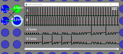
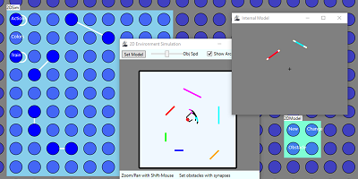

HELP (Detailed)
WATCH YouTube videos about
AGI
Getting Started with
Brain Simulator II
Overview:
Welcome! And thanks for downloading the Brain Simulator II: The Open-Source AGI
Research toolkit! We hope you enjoy the program and learn about neuron simulation
and AGI, and we welcome suggestions, comments, and developer participation.
This page will help start you on your way
Brain Simulator II allows experimentation with many different algorithms. The source
code download includes many features which are previews of future abilities, The objectives
are detailed in the books listed here.
Getting Started:
BASIC: BrainSim networks are like
documents—you can load them, edit them, save them, etc. Many display “Notes”
which display automatically
explaining each network and how to use it. You can drag your mouse from a neuron
to create a synapse. You can drag your mouse from between neurons to selection
a selection.
THE SAMPLE NETWORKS:
Try these sample networks to explore
various features of the Brain Simulator II
. You can open these sample network files from the
File | Library.
Networks relating to neurons and neural modeling:

- BasicNeurons—illustrates the simplest neuron models.
- HebbianSynapses—demonstrates the various synapse models and shows
how spike-timing-dependent plasticity can be used for memory.
- ColorIdentifier—demonstrates how Hebbian synapses can be harnessed
to recognize patterns presented as the color of a rate-encoded signal.
Networks relating to modules and components of AGI:
- SimVision—shows Sallie's simulated environment and vision with
binocular depth perception.
- Imagination—shows how Sallie's internal mental model can be used
for imagination.
- BabyTalk—learns to speak by trial-and-error learning.
- Maze—shows navigation using landmarks as a child might.
- Sallie—is an end-to-end AGI model using hearing, vision, and
knowledge to learn the meanings of a few words.
- Recognition—fleshes out the process of receiving visual input,
recognizing shapes and relationships, and association words.

Networks relating to future sevelopment:
- CameraTest---uses the camera on your computer to set neuron
signals.
-
SpeechTest—uses speech-recognition and synthesis.
- 3DSim—demonstrates the 3D simulator under development.
- NeuralGraph—demonstrates how a mathematical graph can be implemented
in neurons controlled by a module.
-
ObjectMotion—demonstrates how Sallie can move objects in her environment.
HELP (Detailed)
WATCH YouTube videos about
AGI